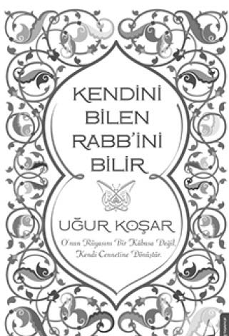

“Hayatın monoton geçtiğinden şikâyet ediyorsun, onu donuk hale getiren yalnızca sensin, senin dünyanda,
senin duygularını kim renksiz kılabilir?
Ve senin her şeyi bırakıp aynanın karşısına geçmeni isterim. Ellerinle yüzüne, gözlerine, burnuna, kulaklarına dokun, onları hissederek dokun ve işte Yaradan’ın izlerini görüyorsun! Dokunduğun yerler ne kadar ilahi, onlar ne kadar kutsallar!.. Sen kutsal bir bedenin içinde yaşayan ruhsun.
İlk adım bedenini sevmektir ve bedenini sevdikten sonra ruhunu sevebileceksin ve son adım seni varlığına götürecektir.